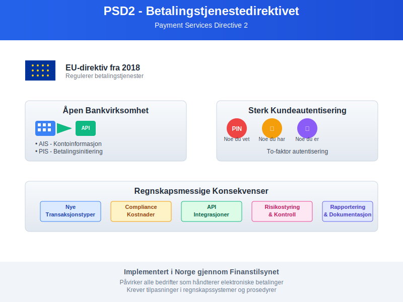
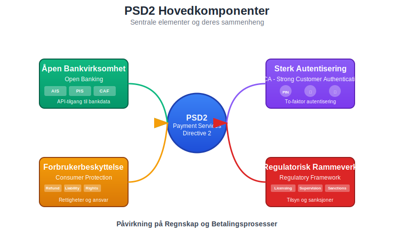
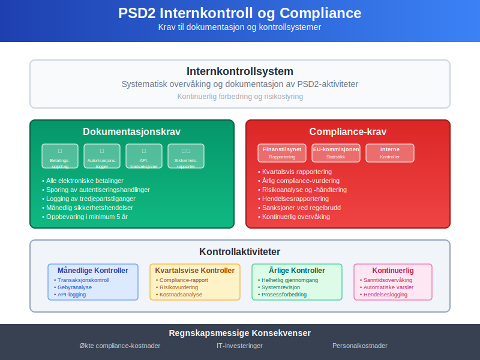
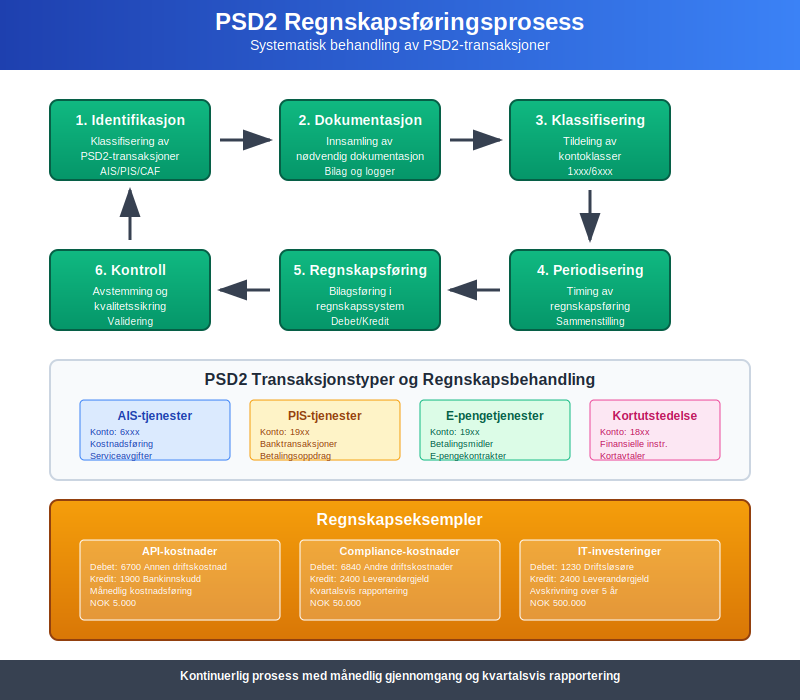
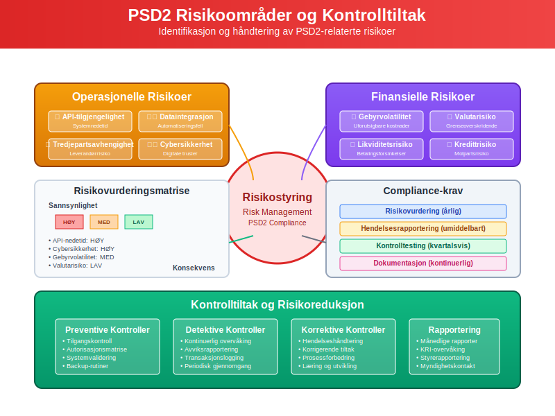
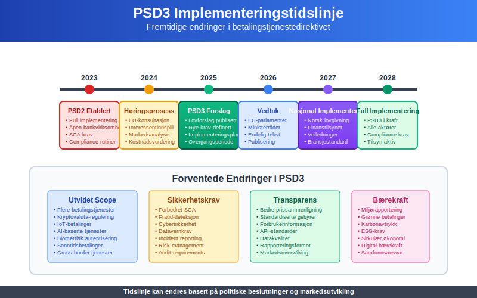

Betalingstjenestedirektivet (PSD2) er EUs omfattende regelverk som regulerer betalingstjenester og har betydelige konsekvenser for regnskapsføring og finansiell rapportering. Direktivet påvirker hvordan bedrifter håndterer betalingsmidler, banktransaksjoner og åpen bankvirksomhet.

Hva er PSD2?
Payment Services Directive 2 (PSD2) er EUs andre betalingstjenestedirektiv som trådte i kraft i 2018. Direktivet har som mål å:
- Øke konkurransen i betalingsmarkedet
- Forbedre forbrukerbeskyttelsen ved betalingstjenester
- Fremme innovasjon gjennom åpen bankvirksomhet
- Harmonisere regelverket på tvers av EU/EØS-området
- Styrke sikkerheten ved elektroniske betalinger
Hovedkomponenter i PSD2
PSD2 består av flere sentrale elementer som påvirker både betalingstjenester og regnskapsføring:

1. Åpen Bankvirksomhet (Open Banking)
Åpen bankvirksomhet krever at banker gir tredjepartstilbydere tilgang til kunders kontoopplysninger og betalingstjenester:
- Account Information Services (AIS): Tilgang til kontoinformasjon
- Payment Initiation Services (PIS): Mulighet til å initiere betalinger
- Confirmation of Availability of Funds (CAF): Bekreftelse av tilgjengelige midler
2. Sterk Kundeautentisering (SCA)
Strong Customer Authentication krever to-faktor autentisering for elektroniske betalinger:
- Noe du vet: PIN-kode, passord
- Noe du har: Mobiltelefon, token
- Noe du er: Fingeravtrykk, ansiktsgjenkjenning
PSD2s Påvirkning på Regnskap
Regnskapsføring av Nye Betalingstjenester
PSD2 introduserer nye typer betalingstjenester som krever spesifikk regnskapsmessig behandling:
| Tjenestetype | Regnskapsmessig behandling | Kontoklasse | Dokumentasjon |
|---|---|---|---|
| AIS-tjenester | Kostnadsføring av tjenesteavgifter | 6xxx | Serviceavtaler |
| PIS-tjenester | Behandling som banktransaksjoner | 19xx | Betalingsoppdrag |
| E-pengetjenester | Særskilt behandling som betalingsmidler | 19xx | E-pengekontrakter |
| Kortutstedelse | Behandling som finansielle instrumenter | 18xx | Kortavtaler |
Internkontroll og Compliance
PSD2 stiller strengere krav til internkontroll og dokumentasjon:

Dokumentasjonskrav
- Betalingsoppdrag: Alle elektroniske betalinger må dokumenteres
- Autorisasjonslogger: Sporing av alle autentiseringshandlinger
- API-transaksjoner: Logging av alle tredjepartstilganger
- Sikkerhetsrapporter: Månedlig rapportering av sikkerhetshendelser
Regnskapsmessige Konsekvenser
Økte compliance-kostnader:
Debet: 6840 Andre driftskostnader
Kredit: 2400 Leverandørgjeld
Investeringer i IT-systemer:
Debet: 1230 Driftsløsøre, inventar o.l.
Kredit: 1900 Bankinnskudd
Implementering i Norge
Finanstilsynets Rolle
Finanstilsynet er ansvarlig for implementering og overvåking av PSD2 i Norge:
- Lisensering av betalingstjenesteytere
- Tilsyn med compliance og sikkerhet
- Rapportering til EU-kommisjonen
- Sanksjoner ved regelbrudd
Norske Særregler
Norge har implementert PSD2 med enkelte nasjonale tilpasninger:
| Område | EU-krav | Norsk implementering | Regnskapsmessig påvirkning |
|---|---|---|---|
| Rapportering | Kvartalsvis | Månedlig for store aktører | Økte administrative kostnader |
| Kapitalkrav | €125.000 minimum | NOK 1.250.000 minimum | Høyere aksjekapital |
| Forsikring | €1 million | NOK 10 millioner | Høyere forsikringspremier |
| Revisjonsplikt | Ikke spesifisert | Obligatorisk for PSD2-aktører | Økte revisjonskostnader |
Regnskapsføring av PSD2-Transaksjoner
Grunnleggende Prinsipper
Regnskapsføring av PSD2-relaterte transaksjoner følger normale regnskapsprinsipper, men med særlige hensyn:

1. Identifikasjon og Klassifisering
Alle PSD2-transaksjoner må identifiseres og klassifiseres korrekt:
- Betalingstype: Direkte, indirekte eller tredjepartsinitiiert
- Gebyrstruktur: Faste avgifter, prosentbaserte eller kombinerte
- Valuta: Innenlandsk eller utenlandsk valuta
- Motpart: Bank, betalingstjenesteyter eller kunde
2. Timing og Periodisering
Periodiseringsprinsippet gjelder for alle PSD2-relaterte poster:
Ved betalingsinitiering:
Debet: 1500 Kundefordringer
Kredit: 3000 Salgsinntekt
Ved gebyrbelastning:
Debet: 6700 Annen driftskostnad
Kredit: 1900 Bankinnskudd
Spesielle Regnskapsområder
API-Kostnader og Lisensavgifter
Tredjepartstilgang til bankdata medfører nye kostnadstyper:
| Kostnadstype | Regnskapsføring | Periodisering | Eksempel |
|---|---|---|---|
| API-avgifter | Løpende kostnadsføring | Månedlig | NOK 5.000/måned |
| Lisensavgifter | Forskuddsbetalte kostnader | Årlig fordeling | NOK 50.000/år |
| Sertifiseringskostnader | Immaterielle eiendeler | Avskrivning over 3 år | NOK 100.000 |
| Compliance-kostnader | Driftskostnader | Løpende | NOK 20.000/måned |
Sikkerhetsinvesteringer
SCA-implementering krever betydelige investeringer:
Investering i autentiseringssystem:
Debet: 1230 Driftsløsøre, inventar o.l. 500.000
Kredit: 2400 Leverandørgjeld 500.000
Månedlig avskrivning (5 år):
Debet: 6040 Avskrivning på driftsløsøre 8.333
Kredit: 1239 Akk. avskr. driftsløsøre 8.333
Risikostyring og Internkontroll
PSD2-Spesifikke Risikoer
Nye risikoområder som følge av PSD2:

Operasjonelle Risikoer
- API-tilgjengelighet: Risiko for systemnedetid
- Dataintegrasjon: Feil i automatiserte prosesser
- Tredjepartsavhengighet: Risiko knyttet til eksterne leverandører
- Cybersikkerhet: Økt eksponering mot digitale trusler
Finansielle Risikoer
- Gebyrvolatilitet: Uforutsigbare transaksjonskostnader
- Valutarisiko: Eksponering ved grenseoverskridende betalinger
- Likviditetsrisiko: Forsinkelser i betalingsoppgjør
- Kredittrisiko: Motpartsrisiko ved nye betalingstjenester
Kontrolltiltak og Dokumentasjon
Månedlige Kontrollaktiviteter
Systematisk oppfølging av PSD2-compliance:
- Transaksjonskontroll: Avstemming av alle PSD2-transaksjoner
- Gebyranalyse: Kontroll av betalingstjenestegebyrer
- API-logging: Gjennomgang av tredjepartstilganger
- Sikkerhetsrapporter: Evaluering av autentiseringsfeil
Kvartalsvis Rapportering
Regelmessig rapportering til ledelse og myndigheter:
| Rapporttype | Innhold | Mottaker | Frist |
|---|---|---|---|
| Compliance-rapport | PSD2-etterlevelse | Finanstilsynet | 30 dager etter kvartal |
| Risikorapport | Operasjonelle risikoer | Styre | 15 dager etter kvartal |
| Kostnadsanalyse | PSD2-relaterte kostnader | Ledelse | 10 dager etter kvartal |
| Sikkerhetsrapport | Cybersikkerhet og SCA | IT-komité | 5 dager etter kvartal |
Fremtidige Utviklinger
PSD3 og Kommende Endringer
EU-kommisjonen arbeider med PSD3 som vil innføre ytterligere endringer:

Forventede Endringer
- Utvidet scope: Flere betalingstjenester inkluderes
- Strengere sikkerhetskrav: Forbedret SCA og fraud-deteksjon
- Økt transparens: Bedre prissammenligning og gebyrstruktur
- Digital identitet: Integrering med eID-løsninger
- Bærekraft: Krav til miljørapportering for betalingstjenester
Regnskapsmessige Konsekvenser
Forberedelser til PSD3 bør starte allerede nå:
Avsetning for fremtidige compliance-kostnader:
Debet: 6840 Andre driftskostnader 200.000
Kredit: 2180 Annen kortsiktig gjeld 200.000
Teknologiske Trender
Nye teknologier vil påvirke PSD2-implementering:
- Kunstig intelligens: Automatisert fraud-deteksjon
- Blockchain: Desentraliserte betalingsløsninger
- Biometri: Avanserte autentiseringsmetoder
- IoT-betalinger: Betalinger fra tilkoblede enheter
- Kryptovaluta: Regulering av digitale valutaer
Praktiske Råd for Bedrifter
Implementeringsstrategi
Systematisk tilnærming til PSD2-compliance:
Fase 1: Kartlegging og Analyse (1-2 måneder)
- Gjennomgang av eksisterende betalingsprosesser
- Identifikasjon av PSD2-påvirkede områder
- Risikovurdering av nye krav
- Kostnadsestimering for implementering
Fase 2: Systemtilpasninger (3-6 måneder)
- IT-systemoppdateringer for SCA-støtte
- API-integrasjoner med tredjepartstjenester
- Regnskapssystemtilpasninger for nye transaksjonstyper
- Rapporteringsverktøy for compliance-overvåking
Fase 3: Testing og Validering (1-2 måneder)
- Funksjonstesting av alle betalingskanaler
- Sikkerhetstesting av autentiseringsløsninger
- Regnskapstesting av nye transaksjonstyper
- Brukeropplæring og prosedyredokumentasjon
Fase 4: Produksjonssetting og Overvåking (Løpende)
- Gradvis utrulling av nye tjenester
- Kontinuerlig overvåking av ytelse og sikkerhet
- Regelmessig rapportering til myndigheter
- Løpende forbedring basert på erfaringer
Kostnads-Nytte Analyse
Evaluering av PSD2-investeringer:
| Kostnadskategori | Engangsbeløp | Årlige kostnader | Potensielle besparelser |
|---|---|---|---|
| IT-systemer | NOK 2.000.000 | NOK 300.000 | Reduserte manulle prosesser |
| Compliance | NOK 500.000 | NOK 600.000 | Unngåtte sanksjoner |
| Opplæring | NOK 200.000 | NOK 100.000 | Økt effektivitet |
| Konsulenter | NOK 800.000 | NOK 200.000 | Raskere implementering |
| Totalt | NOK 3.500.000 | NOK 1.200.000 | Varierer per bedrift |
Valg av Leverandører
Kriterier for valg av PSD2-leverandører:
Tekniske Krav
- API-kompatibilitet: Støtte for PSD2 API-standarder
- Sikkerhetsertifisering: QWAC og QSEAL-sertifikater
- Skalerbarhet: Håndtering av økende transaksjonsvolum
- Integrasjonsmuligheter: Kompatibilitet med eksisterende systemer
Kommersielle Forhold
- Prismodell: Transparente og forutsigbare kostnader
- SLA-avtaler: Garantert oppetid og ytelse
- Support: 24/7 teknisk støtte på norsk
- Fremtidssikring: Roadmap for PSD3-forberedelser
Konklusjon
Betalingstjenestedirektivet (PSD2) representerer en fundamental endring i det europeiske betalingslandskapet med betydelige konsekvenser for regnskapsføring og finansiell rapportering. Bedrifter må tilpasse sine prosesser, systemer og kontroller for å sikre compliance og utnytte mulighetene som åpen bankvirksomhet gir.
Viktigste Takeaways
- PSD2 påvirker alle aspekter av betalingshåndtering og regnskapsføring
- Åpen bankvirksomhet skaper nye muligheter og risikoer
- Sterk kundeautentisering krever betydelige teknologiinvesteringer
- Compliance-kostnader må budsjetteres og følges opp systematisk
- Fremtidige endringer (PSD3) krever kontinuerlig oppmerksomhet
Anbefalinger
- Start tidlig med PSD2-implementering for å unngå stress og ekstraordinære kostnader
- Invester i teknologi som støtter både nåværende og fremtidige krav
- Etabler robuste kontroller for å sikre compliance og redusere risiko
- Utdann personalet i PSD2-krav og nye arbeidsmetoder
- Følg utviklingen av PSD3 og andre regulatoriske endringer
Ved å ta en proaktiv tilnærming til PSD2 kan bedrifter ikke bare sikre compliance, men også posisjonere seg for å dra nytte av de nye mulighetene som det digitale betalingslandskapet tilbyr.